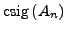
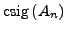
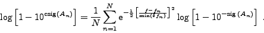

The composed sig is a measure of the probability that two coincident signal components occur in two different datasets. This implements a logical `and', providing an answer to the question, ``What is the probability that two different datasets show coincident signal components with given amplitudes and sigs?''
The composed mode is useful for, e.g., photometry of the same star in different filters, or if two short datasets of the same object obtained in different years are examined.
Note that the composed sig in the SIGSPEC result files (see SIGSPEC manual) is consistently defined, but applies to the set of significant signal components displayed in the file, whereas CINDERELLA refers to the composed sig of signal components found in two or more different datasets.
Contrary to the candidate selection procedure in conditional mode (p. ), the frequency interval between the lowest and the highest frequency found in all target datasets is scanned in steps defined by half the frequency resolution (p.
), the frequency interval between the lowest and the highest frequency found in all target datasets is scanned in steps defined by half the frequency resolution (p. ). For each of the frequencies under consideration, CINDERELLA computes a composed sig, basically following the introduction by Reegen et al. (2008). Since CINDERELLA's composed mode takes into account all signal components in all datasets, statistical weights have to be introduced that put more emphasis to signal frequencies closer to the frequency under consideration. Hence the composed sig
 (annotation by Reegen et al. 2008) assigned to an arbitrary frequency
). For each of the frequencies under consideration, CINDERELLA computes a composed sig, basically following the introduction by Reegen et al. (2008). Since CINDERELLA's composed mode takes into account all signal components in all datasets, statistical weights have to be introduced that put more emphasis to signal frequencies closer to the frequency under consideration. Hence the composed sig
 (annotation by Reegen et al. 2008) assigned to an arbitrary frequency  is evaluated according to
is evaluated according to
|  | (34) |
An interpolation loop is used to exactly identify the maxima of this composed sig, which are written to the output file.
Subsections


Next: Output for composed mode
Up: Cinderella User's Manual by
Previous: Amplitude transformation
Contents
Piet Reegen
2009-09-23